江西万年茶油2021年第四季度电商销售白皮书
长期以来，花生油、菜籽油以及大豆油占据着我国食用油市场前三的地位。2021年下半年，我国大豆进口量有增无减，进口花生米及花生油等数量增幅也比较大。由于原材料油茶树的产量有限，江西万年茶油的产业链规模较小，始终以区域性地方品牌为主；同时相对于花生油、菜籽油等品类而言，茶油价格偏高，市场推广力度也不足。因此作为一种小众产品，2021年第四季度，江西万年茶油电商销售状况不为乐观，整季消费热度均较为低迷，但令人欣慰的是用户满意度极高，这说明江西万年茶油的品质优良，但亟需扩大产业规模和宣传力度，打入消费者市场。
一、
江西万年茶油2021年第四季度日消费热度和消费评价概况度
1.消费热度：消费者单日评价数量稀少或无，消费热度持续低迷
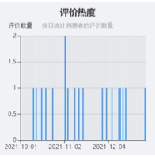
由于粮油类产品本身在电商渠道的消费者信心就积累不足，加之花生油、大豆油、橄榄油等同类竞品在2021年第四季度进口量有所增加，10月份后，江西万年茶油电商销售的日消费者评价数量几乎始终维持在0条或1条的水平，仅11月2日这一天有2条评价信息；且第四季度每月平均仅有5天有消费者对其进行评价。综上所述2021年第四季度，江西万年茶油电商销售市场呈现出较为乏力的迹象，消费热度始终低迷。
2.消费评价：万年茶油虽小众却出众，用户均打出5分好评
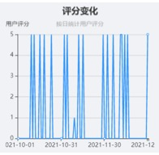
2021年第四季度，除11月初的一次1分低分评价外，整个季度消费者都对万年茶油打出了5分的高分评价，说明江西万年茶油虽然受众不多，但是品质足够优良，凡购买过该产品的消费者均对其表示认可和满意。
3. 同期对比：相比去年同期，消费热度明显提升，用户评价保持一贯好评。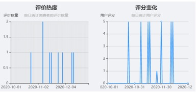
由上图可知，去年同期（即2020年第四季度）每月平均仅有1或2天有消费者对万年茶油进行了消费评价，而2021年第四季度每月消费者对其进行评价的天数上涨至了5天左右，表明消费热度相比去年有所提升，同时用户评价始终保持在5分的水平上，可见江西万年茶油在保持一贯的优良品质的同时，也加大了宣传力度，获得了更多消费者的购买与认可。
二、
江西万年茶油2021年第四季度消费者整体满意度分析
1.用户满意度概况：用户评价虽两极分化明显，但“非常满意”占据主流态度
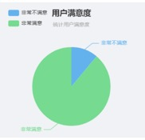
消费者对江西万年茶油的态度由“非常满意”和“非常不满意”两部分组成，呈现出明显的两级分化状态，持“非常满意”评价的消费者占据了94.74%，仅有5.26%的消费者表示“非常不满意”，说明该产品可能有自己专属的受众群体，在目标群体内还是十分受消费者欢迎的，但也需要关注负面评价产生的原因并进行改进升级。
2.
用户评价概况：用户评价内容较为分散，价格和包装是消费者关注的最主要方面。
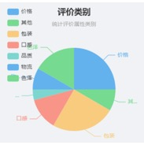
对消费者的评价内容进行分析归纳后可以发现，价格和包装是消费者最看重的两个评价要素，占比都为25%；此外，16.67%的消费者对色泽这一属性进行了评价，12.5%的消费者更关注茶油的口感，还有8.33%的消费者关注物流运输状况，而对于品质这一属性，仅有4.17%的消费者给出了评价。因此对于万年茶油来说，要先着重关注产品的包装设计，及时调整产品价格，其次则是从优化茶油口感，提升物流运输效率等方面对产品进行改进升级。
三．江西万年茶油2021年第四季度消费者对产品属性具体评价分析
1.价格：价格公道实惠是万年茶油赢得消费者好评的首要原因
作为我国特有的木本油脂和食用油市场上的一支新生力量，茶油有着其它食用油所不具备的诸多优点，富含不饱和脂肪酸，极具保健功效。而这样一款小众产品的价格却没有高出同类竞品多少，参与评价的所有消费者都认为其价格公道实惠，因此可见价格是万年茶油赢得一致好评的重要属性之一。
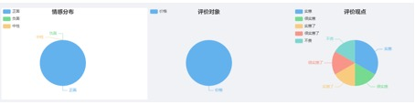
2.包装：产品虽小众，包装却出众，深得消费者喜爱
包装作为品牌视觉和品质体现的载体，直接关乎着品牌和产品在消费者心中的地位。在消费者对江西万年茶油包装属性的评价中，66.67%的消费者给予该产品包装好评，更有超33%的消费者认为该产品的包装足够精美上档次。
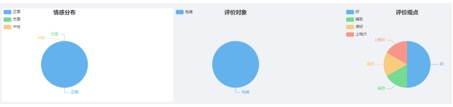
3.色泽：清澈透明，色泽金黄的茶油是消费者的首选茶油
茶油色泽类似花生油，呈金黄或淡黄色，放时间久些会变浅。优质茶油澄清透明，气味清香，味道纯正。75%的消费者评价江西万年茶油油质清澈，25%的消费者评价其颜值很高，所有消费者均对万年茶油的色泽给出了正面评价。
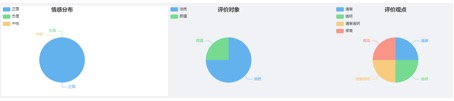
4.口感：清爽可口，不油腻是万年茶油相对于于其他食用油的独特之处。
茶油是从油茶籽中榨取的油脂，味道是油茶的香味——“青味”，略带苦，尝起来爽滑。可用于凉拌、热炒、煎炸、汤菜等多种烹饪手段中，口味爽滑清淡、不油腻、不易糊焦。在消费者对万年茶油口感的评价结果中，66.67%的消费者表示口感很好，另33.33%也评价其味道可口，可见口感也是万年茶油收获消费者好评的主要属性之一。
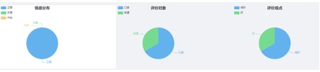
5.物流：物流评价整体较高
在电子商务已渗透到消费各个领域的今天，物流的重要性不言而喻。从消费者对于江西万年茶油物流运输评价的结果来看，给出评价的消费者评价其“很实惠”，说明均认可其物流的高效率和低成本，物流评价整体较高。
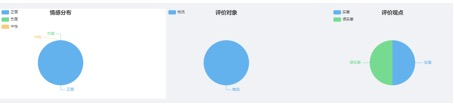
6.其他：产品新鲜，质量可靠才能让消费者买得放心，吃得安全。
随着生活水平的提高，消费者越来越注重食品安全问题。食用油与其它食品一样，也有保质期，过期的食用油会对人体产生危害。2021年第四季度电商销售的万年茶油均是新鲜出品的健康茶油，因此消费者均对“日期”这一属性给出了正面评价。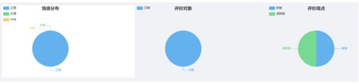
四、江西万年茶油发展建议
1. 政府建议
（1）加大茶油产业规模投入，缩短万年茶油的市场导入期。
据资料显示，目前我国年消费茶油不到百万吨，人均消费量仅为0.44千克。由2021年第四季度江西万年茶油的电商销售状况也可看出，茶油整季的消费热度较为低迷。 这主要是由于油茶树栽培周期较长，受地理和气候条件的影响大，茶油原材料的供应呈现出一种供不应求的态势。因此受到产量的限制，相对于花生油大豆油等其他同类竞品，万年茶油的受众范围较为狭窄，仍处于市场导入期，还没有深度打入消费者市场。
因此，万年县政府首先要做的就是着力开发和深入整个茶油产业链。具体而言，政府可以通过资金扶持政策和扶贫助农宣讲活动，引导万年县农民因地制宜地扩大油茶树的种植规模；聘请专业技术人员，提升茶油制作过程中的产业化模式，针对茶油萃取、提炼、灌装等加工工艺进行改进和升级；完善产业整体布局，定向扶持一些农业化企业采取农户+基地+公司+市场的合作模式来寻求新的市场突破，从根源上扩大茶油的市场销售规模。
（2）深植农村电商生态，拓宽万年茶油的销售渠道
①加大在电商平台APP广告投放方面的额度。酒香也怕巷子深，好的产品需要被消费者在第一时间看到。由2021年第四季度江西万年茶油的消费概况可以看出，产品销量虽少，但消费者评价极高，这说明万年茶油的知名度很低，很可能没有第一时间被消费者看到。因此政府可以通过关键词搜索推广等方式增加广告投放额度，让江西万年茶油展示在用户页面的明显位置，从而使更广泛的消费者接触到这款产品。
②政府可以牵头和知名电商平台深入开展合作，统一整合域内商户。一方面，在天猫、京东、拼多多等主流电商平台上建立官方旗舰店进行平台售卖；另一方面，积极寻求与知名带货主播的合作，引进运营经验丰富，懂平台机制、懂算法、懂引流、懂方案设计的销售团队。通过与权威性平台和主播的联结，打破消费者对于茶油这类小众产品的不信任心理，从而激发消费者尝试购买的欲望。
（3）借助社交媒体的社会化属性，增强万年茶油的宣传力度。
①政府主导建立万年茶油的官方自媒体，通过发布与消费者生活息息相关的内容，引发消费者的共鸣，让产品在消费者之间自行传播。例如，在新浪微博、小红书等主流社交平台，以及抖音快手等视频直播平台，开设“食用油购买避坑指南”、“茶油食谱”、“茶油历史故事”、“健康科普”等系列栏目，引发用户的关注讨论和内容分享，从而增加茶油的购买热度。
②进行KOL投放，让万年茶油这个品牌充分渗入消费者所在的社交圈层。政府可以与当地美食博主进行合作，通过他们的试吃测评和体验分享，向广大消费者“种草”，让更多的消费者产生购买的兴趣和分享的意愿，从而扩大市场面。
（4）充分利用万年县地域文化资源开展茶油营销活动
2.平台商家建议
（1）充分挖掘万年茶油核心卖点，围绕其“保健功效”进行差异化宣传
目前市场上的诸多食用油多以“天然”、“营养”、“纯正”等作为产品的定位诉求，没有形成自己独有的鲜明的品牌特点。而茶油因其含丰富的不饱和油酸和亚麻油酸含94%左右，食后易消化，具有降低人体血脂，预防心脑血管疾病等多功效，2002年美国白宫卫生研究院（NIH）营养平衡委员会主席A．P．西莫普勒斯博士把茶油排在了橄榄油的前面，可见茶油充分迎合了现代人追求绿色保健的消费趋势。因此商家在平台进行宣传时，应突出茶油特有的保健养颜功效，和花生油大豆油等同类产品形成差异化竞争，从而获取市场份额。
（2）结合季度特征，积极开展电商促销活动
由江西万年茶油第四季度的销售数据可见，11月中至12月中上旬之间的消费热度最为活跃，此时恰逢“双十一”、”双十二”、“圣诞节”“跨年夜”等电商促销节日期，平台商家应积极参与这些电商促销活动，联动其他粮油类产品开展直减、折扣、满减、抽奖等各类优惠活动，为消费者提供更为多元化的购物体验，加强与消费者互动的同时，更提高了万年茶油的销售份额。
（3）针对消费者的不同诉求，对茶油进行分级定价和出售
江西万年茶油第四季度的消费者评价数据显示，有25%的消费者针关注价格这一要素，价格公道是万年茶油赢得消费者好评的首要原因。而又由于万年茶油具有比花生油、橄榄油等产品更为突出的保健功效，无法做到完全压低价格，与其他同类产品打“价格战”。
因此建议商家实施分级定价策略，按照茶油的不同质量标准等级和用途，将其分为：①极品山茶油、国标一级（即为第一遭压榨山茶果子而得的果子汁，带有果香及果味，油酸度于1%）；②纯正山茶油、国标二级（即有机榨山茶油经过除杂、脱酸、脱水、脱色、脱臭及冷冻脱脂加工而成）③特级山茶油、医药注射级（有原始森林深山采集山茶果子压榨而得，专供医药注射用油、化妆品用油），由此对不同等级的茶油进行宣传和出售。
3.
生产厂家建议
分析2021年第四季度万年茶油的消费者评价内容可以发现，除价格外，包装和保质期也是消费者较为关注的产品属性。基于此对于生产厂家有两点建议：
①在包装组合方面，以“普通装”+“礼盒装”为销售品项，日常销售可着重推广普通包装，节日促销期间以礼盒包装为主推产品；在包装设计方面，可印制油茶树等原材料元素，从而突出茶油的高端典雅风格，与其他食用油明显区分开来；还可突出万年县的地域特征以强化区域性品牌形象。
②茶油作为食用油的保质期一般是18个月，超出18个月及以上的茶油不可食用，但可外敷，发挥其药用价值。因此建议生产厂家要多多注茶油的库存量和生产日期，及时调整产品销售使用途径。
4. 消费建议
第四季度正值疾病高发的秋冬季节，气温骤变往往容易导致人体抵抗力下降。我们倡导消费者要注重食疗养生，注重食用油的选择。吃好油才能合理补充营养，让身体各项机能更好发挥，从而防止病毒入侵。
首先，“脂肪酸”这种营养元素是否全面是评价食用油优劣的首要指标，因此我们倡导消费者购买不饱和脂肪酸含量高达90%以上的茶油作为冬季食用油。其次，定期轮换食用各类植物油，将更有助于摄入均衡的营养元素。第三，提倡消费者购买小瓶装的食用油，不仅方便保存，也便于更换其他种类的油品。最后，提醒消费者多多关注电商促销活动，以购得更为实惠和高性价比的产品。